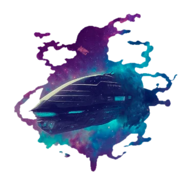

ФЕНОМ
карта галактики
?
🚀
Феном
Ноды
Карта
Графика
📖
Справочник
✕
📖
Феном
🧬
Расы
🔮
Магия
🔧
Техника
🌌
Галактика
Отмена
×
✕
🗺️
Карта системы
👑
Контролирующая раса
✕
📄
Описание
📖
Статья
♟️
Игра
🗺️
Карта
✏️
Правка
👥
✕
📄
Описание
📖
Статья
♟️
Игра
✏️
Правка
✕
📋
Анкета
✏️
Правка
📝
Заметки
🎲
Броски